虚拟内存提供了三个重要的能力:
1)它将主存看成是一个存储在磁盘上的地址空间的高速缓存，在主存中只保存活动区域，并根据需要在磁盘和主存之间来回传送数据，通过这种方式，它高效地使用了主存。
2)它为每个进程提供了一致的地址空间，从而简化了内存管理。
3)它保护了每个进程的地址空间不被其他进程破坏。
物理和虚拟寻址
计算机系统的主存被组织成一个由M个连续的字节大小的单元组成的数组。每字节都有一个唯一的物理地址(Physical Address,PA)。第一个字节的地址为0，接下来的字节地址为1，再下一个为2，依此类推。给定这种简单的结构，
CPU访问内存的最自然的方式就是使用物理地址。我们把这种方式称为物理寻址(physicaladdressing)。
下图展示了一个物理寻址的示例，该示例的上下文是一条加载指令，它读取从物理地址4处开始的4字节字。当CPU执行这条加载指令时，会生成一个有效物理地址，通过内存总线，把它传递给主存。主存取出从物理地址4处开始的4字 节字，并将它返回给CPU, CPU会将它存放在一个寄存器里。
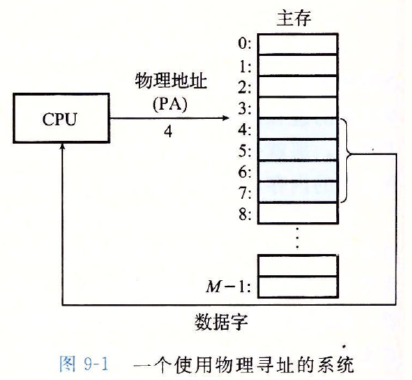
现代处理器使用的是一种称为虚拟寻址(virtual addressing)的寻址形式，如下图使用虚拟寻址，CPU通过生成一个虚拟地址(Virtual Address, VA)来访问主存，这个虚拟地址在被送到内存之前先转换成适当的物理地址。将一个 虚拟地址转换为物理地址的任务叫做地址翻译(address translation)。就像异常处理一样，地址翻译需要CPU硬件和操作系统之I间的紧密合作。CPU芯片上叫做内存管理单元(Memory Management Unit,MMU)的专用硬件，利用存放 在主存中的查询表来动态翻译虚拟地址，该表的内容由操作系统管理。 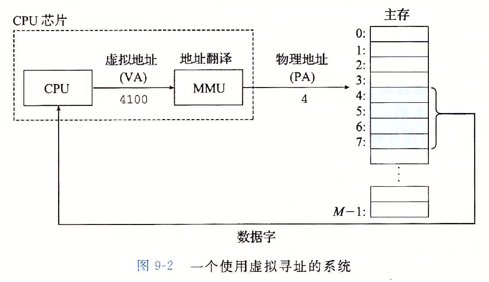
下图展示了一个物理寻址的示例，该示例的上下文是一条加载指令，它读取从物理地址4处开始的4字节字。当CPU执行这条加载指令时，会生成一个有效物理地址，通过内存总线，把它传递给主存。主存取出从物理地址4处开始的4字 节字，并将它返回给CPU, CPU会将它存放在一个寄存器里。
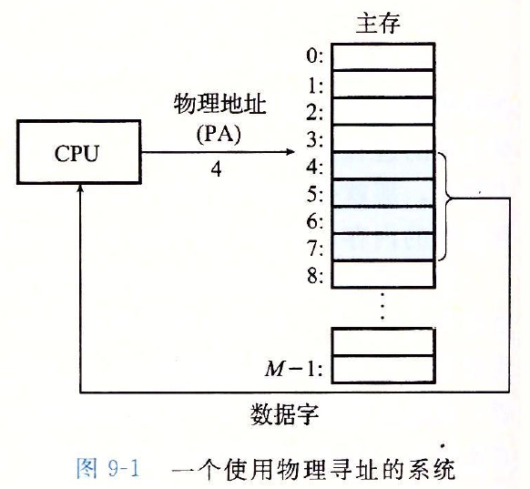
现代处理器使用的是一种称为虚拟寻址(virtual addressing)的寻址形式，如下图使用虚拟寻址，CPU通过生成一个虚拟地址(Virtual Address, VA)来访问主存，这个虚拟地址在被送到内存之前先转换成适当的物理地址。将一个 虚拟地址转换为物理地址的任务叫做地址翻译(address translation)。就像异常处理一样，地址翻译需要CPU硬件和操作系统之I间的紧密合作。CPU芯片上叫做内存管理单元(Memory Management Unit,MMU)的专用硬件，利用存放 在主存中的查询表来动态翻译虚拟地址，该表的内容由操作系统管理。 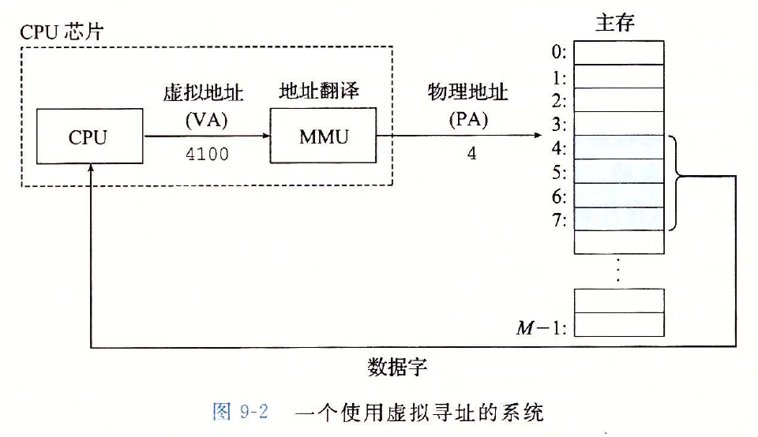
地址空间
地址空间(address space)是一个非负整数地址的有序集合:
{0，1，2，…}
如果地址空间中的整数是连续的，那么我们说它是一个线性地址空间(( linear addressspace)。为了简化讨论，假设使用的是线性地址空间。在一个带虚拟内存的系统中，CPU从一个有N = 2^n个地址的地址空间中生成虚拟地址，这个 地址空间称为虚拟地址空间(virtual address space)
{0，1，2，…，N-1}
一个地址空间的大小是由表示最大地址所需要的位数来描述的。例如，一个包含N=2^n个地址的虚拟地址空间就叫做一个n位地址空间。现代系统通常支持32位或者64位虚拟地址空间。一个系统还有一个物理地址空间 (physical address space)，对应于系统中物理内存的M个字节:
{0，1，2，…，M-1}
M不要求是2的幂，但是为了简化讨论，我们假设M= 2^m。
地址空间清楚地区分了数据对象(字节)和它们的属性(地址)。我们就可以将其推广，允许每个数据对象有多个独立的地址，其中每个地址都选自一个不同的地址空间。这就是虚拟内存的基本思想。主存中的每字节都有一个选自虚拟地址空 间的虚拟地址和一个选自物理地址空间的物理地址。
——————————————————————————————————————————————————————————————————————————第二次作业——————————————————————————————————————————————————————————————————————————
{0，1，2，…}
如果地址空间中的整数是连续的，那么我们说它是一个线性地址空间(( linear addressspace)。为了简化讨论，假设使用的是线性地址空间。在一个带虚拟内存的系统中，CPU从一个有N = 2^n个地址的地址空间中生成虚拟地址，这个 地址空间称为虚拟地址空间(virtual address space)
{0，1，2，…，N-1}
一个地址空间的大小是由表示最大地址所需要的位数来描述的。例如，一个包含N=2^n个地址的虚拟地址空间就叫做一个n位地址空间。现代系统通常支持32位或者64位虚拟地址空间。一个系统还有一个物理地址空间 (physical address space)，对应于系统中物理内存的M个字节:
{0，1，2，…，M-1}
M不要求是2的幂，但是为了简化讨论，我们假设M= 2^m。
地址空间清楚地区分了数据对象(字节)和它们的属性(地址)。我们就可以将其推广，允许每个数据对象有多个独立的地址，其中每个地址都选自一个不同的地址空间。这就是虚拟内存的基本思想。主存中的每字节都有一个选自虚拟地址空 间的虚拟地址和一个选自物理地址空间的物理地址。
虚拟内存作为缓存的工具
概念上而言，虚拟内存被组织为一个由存放在磁盘上的N个连续的字节大小的单元组成的数组。每字节都有一个唯一的虚拟地址，作为到数组的索引。磁盘上数组的内容被缓存在主存中。和存储器层次结构中其他缓存一样，磁盘(较低层)上
的数据被分割成块，这些块作为磁盘和主存(较高层)之间的传输单元。VM系统通过将虚拟内存分割为称为虚拟页(Virtual Page, VP)的大小固定的块来处理这个问题。每个虚拟页的大小为P=2^p字节。类似地，物理内存被分割为物理页
(Physical Page, PP)，大小也为P字节(物理页也被称为页帧( page frame) ) 。
在任意时刻，虚拟页面的集合都分为三个不相交的子集:
未分配的:VM系统还未分配(或者创建)的页。未分配的块没有任何数据和它们相关联，因此也就不占用任何磁盘空间
缓存的:当前已缓存在物理内存中的已分配页
未缓存的:未缓存在物理内存中的已分配页
如下图的示例展示了一个有8个虚拟页的小虚拟内存。虚拟页0和3还没有被分配，因此在磁盘上还不存在。虚拟页1, 4和6被缓存在物理内存中。页2, 5和7已经被分配了，但是当前并未缓存在主存中。
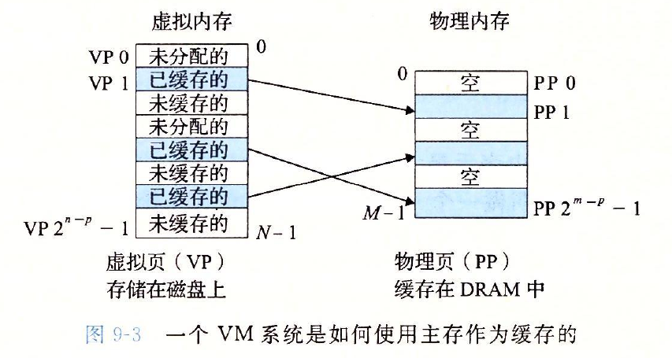
在任意时刻，虚拟页面的集合都分为三个不相交的子集:
DRAM缓存的组织结构
在存储层次结构中，DRAM缓存的位置对它的组织结构有很大的影响。DRAM比SRAM要慢大约10倍，而磁盘要比DRAM慢大约100000多倍。因此，DRAM缓存中的不命中比起SRAM缓存中的不命中要昂贵得多，这是因为DRAM缓存不
命中要由磁盘来服务，而SRAM缓存不命中通常是由基于DRAM的主存来服务的。而且，从磁盘的一个扇区读取第一个字节的时间开销比起读这个扇区中连续的字节要慢大约100000倍。归根到底，DRAM缓存的组织结构完全是由
巨大的不命中开销驱动的。因为大的不命中处罚和访问第一个字节的开销，虚拟页往往很大，通常是4KB ~ 2MB。由于大的不命中处罚，DRAM缓存是全相联的，即任何虚拟页都可以放置在任何的物理页中。不命中时的替换策
略也很重要，因为替换错了虚拟页的处罚也非常之高。因此，与硬件对SRAM缓存相比，操作系统对DRAM缓存使用了更复杂精密的替换算法。最后，因为对磁盘的访问时间很长，DRAM缓存总是使用写回，而不是直写。
页表
同任何缓存一样，虚拟内存系统必须有某种方法来判定一个虚拟页是否缓存在DRAM中的某个地方。如果是，系统还必须确定这个虚拟页存放在哪个物理页中。如果不命中，系统必须判断这个虚拟页存放在磁盘的哪个位置，在
物理内存中选择一个牺牲页，并将虚拟页从磁盘复制到DRAM中，替换这个牺牲页。
这些功能是由软硬件联合提供的，包括操作系统软件、MMU(内存管理单元)中的地址翻译硬件和一个存放在物理内存中叫做页表(page table)的数据结构，页表将虚拟页映射到物理页。每次地址翻译硬件将一个虚拟地址转换 为物理地址时，都会读取页表。操作系统负责维护页表的内容，以及在磁盘与DRAM之间来回传送页。。
下图展示了一个页表的基本组织结构。页表就是一个页表条目(Page Table Entry,PTE)的数组。虚拟地址空间中的每个页在页表中一个固定偏移量处都有一个PTE。为了我们的目的，我们将假设每个PTE是由一个有效位 (valid bit)和一个n位地址字段组成的。有效位表明了该虚拟页当前是否被缓存在DRAM中。如果设置了有效位，那么地址字段就表示DRAM中相应的物理页的起始位置，这个物理页中缓存了该虚拟页。如果没有设置有效位， 那么一个空地址表示这个虚拟页还未被分配。否则，这个地址就指向该虚拟页在磁盘上的起始位置。 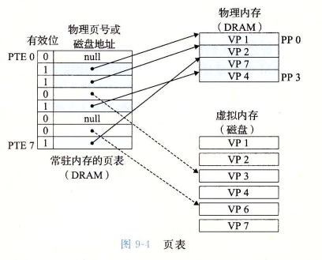 图中的示例展示了一个有8个虚拟页和4个物理页的系统的页表。四个虚拟页(VP 1, VP 2, VP 4和VP7)当前被缓存在 DRAM中。两个页(VP 0和VP 5)还未被分配，而剩下的页(VP 3和VP 6)已经被分配了，但是当前还未被 缓存。因为DRAM缓存是全相联的，所以任意物理页都可以包含任意虚拟页。
这些功能是由软硬件联合提供的，包括操作系统软件、MMU(内存管理单元)中的地址翻译硬件和一个存放在物理内存中叫做页表(page table)的数据结构，页表将虚拟页映射到物理页。每次地址翻译硬件将一个虚拟地址转换 为物理地址时，都会读取页表。操作系统负责维护页表的内容，以及在磁盘与DRAM之间来回传送页。。
下图展示了一个页表的基本组织结构。页表就是一个页表条目(Page Table Entry,PTE)的数组。虚拟地址空间中的每个页在页表中一个固定偏移量处都有一个PTE。为了我们的目的，我们将假设每个PTE是由一个有效位 (valid bit)和一个n位地址字段组成的。有效位表明了该虚拟页当前是否被缓存在DRAM中。如果设置了有效位，那么地址字段就表示DRAM中相应的物理页的起始位置，这个物理页中缓存了该虚拟页。如果没有设置有效位， 那么一个空地址表示这个虚拟页还未被分配。否则，这个地址就指向该虚拟页在磁盘上的起始位置。 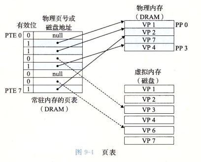 图中的示例展示了一个有8个虚拟页和4个物理页的系统的页表。四个虚拟页(VP 1, VP 2, VP 4和VP7)当前被缓存在 DRAM中。两个页(VP 0和VP 5)还未被分配，而剩下的页(VP 3和VP 6)已经被分配了，但是当前还未被 缓存。因为DRAM缓存是全相联的，所以任意物理页都可以包含任意虚拟页。
页命中
当CPU想要读包含在VP 2中的虚拟内存的一个字时会发生什么(如下图), VP2被缓存在DRAM中地址翻译硬件将虚拟地址作为一个索引来定位PTE 2，并从内存中读取它。因为设置了有效位，那么地址翻译硬件就知道VP 2是缓
存在内存中的了。所以它使用PTE中的物理内存地址(该地址指向PP 1中缓存页的起始位置)，构造出这个字的物理地址。
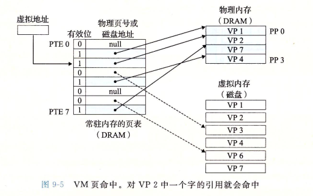
缺页
在虚拟内存中，DRAM缓存不命中称为缺页(page fault)。下图展示了在缺页之前我们的示例页表的状态。CPU引用了VP 3中的一个字，VP 3并未缓存在DRAM中。地址翻译硬件从内存中读取PTE 3，从有效位推断出VP 3未
被缓存，并且触发一个缺页异常。缺页异常调用内核中的缺页异常处理程序，该程序会选择一个牺牲页，在此例中就是存放在PP 3中的VP 4。如果VP 4已经被修改了，那么内核就会将它复制回磁盘。无论哪种情况，内核都
会修改VP 4的页表条目，反映出VP 4不再缓存在主存中这一事实。
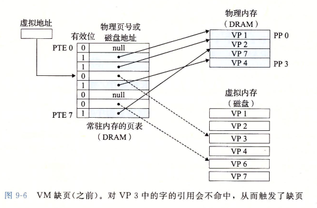
接下来，内核从磁盘复制VP 3到内存中的PP 3，更新PTE 3，随后返回。当异常处理程序返回时，它会重新启动导致缺页的指令，该指令会把导致缺页的虚拟地址重发送到地址翻译硬件。但是现在，VP 3已经缓存在主存中
了，那么页命中也能由地址翻译硬件正常处理了。下图展示了在缺页之后我们的示例页表的状态。
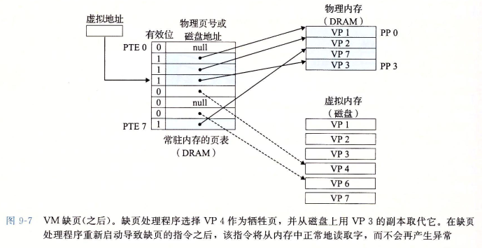
在虚拟内存的习惯说法中，块被称为页。在磁盘和内存之间传送页的活动叫做交换(swapping)或者页面调度(paging)。页从磁盘换入(或者页面调入)DRAM和从DRAM换出(或者页面调出)磁盘。一直等待，直到最后时刻，也
就是当有不命中发生时，才换人页面的这种策略称为按需页面调度(demand paging)。也可以采用其他的方法，现代系统都使用的是按需页面调度的方式。
分配页面
下图展示了当操作系统分配一个新的虚拟内存页时对我们示例页表的影响，例如，调用malloc的结果。在这个示例中，VP5的分配过程是在磁盘上创建空间并更新PTE 5，使它指向磁盘上这个新创建的页面。
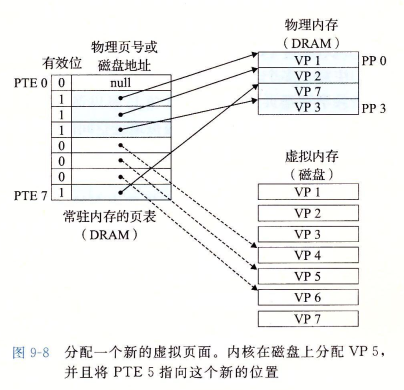
又是局部性救了我们
当我们中的许多人都了解了虚拟内存的概念之后，我们的第一印象通常是它的效率应该是非常低。因为不命中处罚很大，我们担心页面调度会破坏程序性能。实际上，虚拟内存工作得相当好，这主要归功于我们的老朋友局部性(locality)。
尽管在整个运行过程中程序引用的不同页面的总数可能超出物理内存总的大小，但是局部性原则保证了在任意时刻，程序将趋向于在一个较小的活动页面((active page)集合上工作，这个集合叫做工作集(working set)或 者常驻集合((resident set)。在初始开销，也就是将工作集页面调度到内存中之后，接下来对这个工作集的引用将导致命中，而不会产生额外的磁盘流量。
只要我们的程序有好的时间局部性，虚拟内存系统就能工作得相当好。但是，当然不是所有的程序都能展现良好的时间局部性。如果工作集的大小超出了物理内存的大小，那么程序将产生一种不幸的状态，叫做抖动(thrashing)， 这时页面将不断地换进换出。虽然虚拟内存通常是有效的，但是如果一个程序性能慢得像爬一样，那么聪明的程序员会考虑是不是发生了抖动。
尽管在整个运行过程中程序引用的不同页面的总数可能超出物理内存总的大小，但是局部性原则保证了在任意时刻，程序将趋向于在一个较小的活动页面((active page)集合上工作，这个集合叫做工作集(working set)或 者常驻集合((resident set)。在初始开销，也就是将工作集页面调度到内存中之后，接下来对这个工作集的引用将导致命中，而不会产生额外的磁盘流量。
只要我们的程序有好的时间局部性，虚拟内存系统就能工作得相当好。但是，当然不是所有的程序都能展现良好的时间局部性。如果工作集的大小超出了物理内存的大小，那么程序将产生一种不幸的状态，叫做抖动(thrashing)， 这时页面将不断地换进换出。虽然虚拟内存通常是有效的，但是如果一个程序性能慢得像爬一样，那么聪明的程序员会考虑是不是发生了抖动。
虚拟内存作为内存管理的工具
实际上，操作系统为每个进程提供了一个独立的页表，因而也就是一个独立的虚拟地址空间。下图展示了基本思想。在这个示例中，进程i的页表将VPl映射到PP2,VP2映射到PP7。相似地，进程j的页表将VP1映射到PP7, VP2映射
到PP10。注意，多个虚拟页面可以映射到同一个共享物理页面上。按需页面调度和独立的虚拟地址空间的结合，对系统中内存的使用和管理造成了深远的影响。特别地，VM简化了链接和加载、代码和数据共享，以及应用程序的内
存分配。
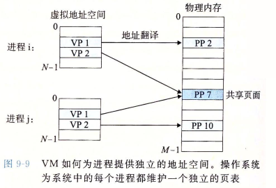
简化链接:独立的地址空间允许每个进程的内存映像使用相同的基本格式，而不管代码和数据实际存放在物理内存的何处。一个给定的Linux系统上的每个进程都使用类似的内存格式。对于64位地址空间，代码段总是从虚拟地址
x40000。开始。数据段跟在代码段之后，中间有一段符合要求的对齐空白。栈占据用户进程地址空间最高的部分，并向下生长。这样的一致性极大地简化了链接器的设计和实现，允许链接器生成完全链接的可执行文件，这些可执
行文件是独立于物理内存中代码和数据的最终位置的。
简化加载:虚拟内存还使得容易向内存中加载可执行文件和共享对象文件。要把目标文件中.text和.data节加载到一个新创建的进程中，Linux加载器为代码和数据段分配虚拟页，把它们标记为无效的(即未被缓存的)，将页表条 目指向目标文件中适当的位置。有趣的是，加载器从不从磁盘到内存实际复制任何数据。在每个页初次被引用时，要么是CPU取指令时引用的，要么是一条正在执行的指令引用一个内存位置时引用的，虚拟内存系统会按照需要自 动地调人数据页。将一组连续的虚拟页映射到任意一个文件中的任意位置的表示法称作内存映射( memory mapping)。Linux提供一个称为mmap的系统调用，允许应用程序自己做内存映射。
简化共享:独立地址空间为操作系统提供了一个管理用户进程和操作系统自身之间共享的一致机制。一般而言，每个进程都有自己私有的代码、数据、堆以及栈区域，是不和其他进程共享的。在这种情况中，操作系统创建页表， 将相应的虚拟页映射到不连续的物理页面。然而，在一些情况中，还是需要进程来共享代码和数据。例如，每个进程必须调用相同的操作系统内核代码，而每个C程序都会调用C标准库中的程序，比如printf。操作系统通过将不同 进程中适当的虚拟页面映射到相同的物理页面，从而安排多个进程共享这部分代码的一个副本，而不是在每个进程中都包括单独的内核和C标准库的副本，如上图所示。
简化内存分配：虚拟内存为向用户进程提供一个简单的分配额外内存的机制。当一个运行在用户进程中的程序要求额外的堆空间时(如调用malloc的结果)，操作系统分配一个适当数字(例如k)个连续的虚拟内存页面，并且将它们 映射到物理内存中任意位置的k个任意的物理页面。由于页表工作的方式，操作系统没有必要分配k个连续的物理内存页面。页面可以随机地分散在物理内存中。
简化加载:虚拟内存还使得容易向内存中加载可执行文件和共享对象文件。要把目标文件中.text和.data节加载到一个新创建的进程中，Linux加载器为代码和数据段分配虚拟页，把它们标记为无效的(即未被缓存的)，将页表条 目指向目标文件中适当的位置。有趣的是，加载器从不从磁盘到内存实际复制任何数据。在每个页初次被引用时，要么是CPU取指令时引用的，要么是一条正在执行的指令引用一个内存位置时引用的，虚拟内存系统会按照需要自 动地调人数据页。将一组连续的虚拟页映射到任意一个文件中的任意位置的表示法称作内存映射( memory mapping)。Linux提供一个称为mmap的系统调用，允许应用程序自己做内存映射。
简化共享:独立地址空间为操作系统提供了一个管理用户进程和操作系统自身之间共享的一致机制。一般而言，每个进程都有自己私有的代码、数据、堆以及栈区域，是不和其他进程共享的。在这种情况中，操作系统创建页表， 将相应的虚拟页映射到不连续的物理页面。然而，在一些情况中，还是需要进程来共享代码和数据。例如，每个进程必须调用相同的操作系统内核代码，而每个C程序都会调用C标准库中的程序，比如printf。操作系统通过将不同 进程中适当的虚拟页面映射到相同的物理页面，从而安排多个进程共享这部分代码的一个副本，而不是在每个进程中都包括单独的内核和C标准库的副本，如上图所示。
简化内存分配：虚拟内存为向用户进程提供一个简单的分配额外内存的机制。当一个运行在用户进程中的程序要求额外的堆空间时(如调用malloc的结果)，操作系统分配一个适当数字(例如k)个连续的虚拟内存页面，并且将它们 映射到物理内存中任意位置的k个任意的物理页面。由于页表工作的方式，操作系统没有必要分配k个连续的物理内存页面。页面可以随机地分散在物理内存中。
虚拟内存作为内存保护的工具
任何现代计算机系统必须为操作系统提供手段来控制对内存系统的访问。不应该允许一个用户进程修改它的只读代码段。而且也不应该允许它读或修改任何内核中的代码和数据结构。不应该允许它读或者写其他进程的私有内存，
并且不允许它修改任何与其他进程共享的虚拟页面，除非所有的共享者都显式地允许它这么做(通过调用明确的进程间通信系统调用)。就像我们所看到的，提供独立的地址空间使得区分不同进程的私有内存变得容易。但是，地址
翻译机制可以以一种自然的方式扩展到提供更好的访问控制。因为每次CPU生成一个地址时，地址翻译硬件都会读一个PTE，所以通过在PTE上添加一些额外的许可位来控制对一个虚拟页面内容的访问十分简单。下图展示了大致
的思想。
 在这个示例中，每个PTE中已经添加了三个许可位。SUP位表示进程是否必须运行在内核(超级用户)模式下才能访问该页。运行在内核模式中的进程可以访问任何页面，但是运行在用户模式中的进程只允许访问那些SUP为。的页面。
READ位和WRITE位控制对页面的读和写访问。例如，如果进程z运行在用户模式下，那么它有读VP0和读写VP1的权限。然而，不允许它访问VP20如果一条指令违反了这些许可条件，那么CPU就触发一个一般保护故障，将控制传递
给一个内核中的异常处理程序。Linux shell一般将这种异常报告为“段错误(segmentation fault)”。
在这个示例中，每个PTE中已经添加了三个许可位。SUP位表示进程是否必须运行在内核(超级用户)模式下才能访问该页。运行在内核模式中的进程可以访问任何页面，但是运行在用户模式中的进程只允许访问那些SUP为。的页面。
READ位和WRITE位控制对页面的读和写访问。例如，如果进程z运行在用户模式下，那么它有读VP0和读写VP1的权限。然而，不允许它访问VP20如果一条指令违反了这些许可条件，那么CPU就触发一个一般保护故障，将控制传递
给一个内核中的异常处理程序。Linux shell一般将这种异常报告为“段错误(segmentation fault)”。
在这个示例中，每个PTE中已经添加了三个许可位。SUP位表示进程是否必须运行在内核(超级用户)模式下才能访问该页。运行在内核模式中的进程可以访问任何页面，但是运行在用户模式中的进程只允许访问那些SUP为。的页面。
READ位和WRITE位控制对页面的读和写访问。例如，如果进程z运行在用户模式下，那么它有读VP0和读写VP1的权限。然而，不允许它访问VP20如果一条指令违反了这些许可条件，那么CPU就触发一个一般保护故障，将控制传递
给一个内核中的异常处理程序。Linux shell一般将这种异常报告为“段错误(segmentation fault)”。
地址翻译
下图概括了我们在这节里将要使用的所有符号.
 形式上来说，地址翻译是一个V元素的虚拟地址空间(VAS)中的元素和一个M元素的物理地址空间(PAS)中元素之间的映射。
形式上来说，地址翻译是一个V元素的虚拟地址空间(VAS)中的元素和一个M元素的物理地址空间(PAS)中元素之间的映射。
下图展示了MMU如何利用页表来实现这种映射。CPU中的一个控制寄存器，页表基址寄存器(Page Table Base Register, PTBR)指向当前页表。n位的虚拟地址包含两个部分:
 一个p位的虚拟页面偏移(Virtual Page Offset, VPO)和一个(n-p)位的虚拟页号(VirtualPage Number, VPN) 。MMU利用VPN来选择适当的PTE。将页表条目中物理页号(Physical Page Number, PPN)和虚拟地址中的VPO
串联起来，就得到相应的物理地址。注意，因为物理和虚拟页面都是P字节的，所以物理页面偏移(PhysicalPage Offset, PPO)和VPO是相同的。
一个p位的虚拟页面偏移(Virtual Page Offset, VPO)和一个(n-p)位的虚拟页号(VirtualPage Number, VPN) 。MMU利用VPN来选择适当的PTE。将页表条目中物理页号(Physical Page Number, PPN)和虚拟地址中的VPO
串联起来，就得到相应的物理地址。注意，因为物理和虚拟页面都是P字节的，所以物理页面偏移(PhysicalPage Offset, PPO)和VPO是相同的。
下图a展示了当页面命中时，CPU硬件执行的步骤。
第1步:处理器生成一个虚拟地址，并把它传送给MMU。
第2步:MMU生成PTE地址，并从高速缓存/主存请求得到它。
第3步:高速缓存/主存向MMU返回PTE。
第4步:MMU构造物理地址，并把它传送给高速缓存/主存。
第5步:高速缓存/主存返回所请求的数据字给处理器。
 页面命中完全是由硬件来处理的，与之不同的是，处理缺页要求硬件和操作系统内核协作完成，如上图b所示。
页面命中完全是由硬件来处理的，与之不同的是，处理缺页要求硬件和操作系统内核协作完成，如上图b所示。
第1步到第3步:和上图a中的第1步到第3步相同。
第4步:PTE中的有效位是零，所以MMU触发了一次异常，传递CPU中的控制到操作系统内核中的缺页异常处理程序。
第5步:缺页处理程序确定出物理内存中的牺牲页，如果这个页面已经被修改了，则把它换出到磁盘。
第6步:缺页处理程序页面调人新的页面，并更新内存中的PTE a
第7步:缺页处理程序返回到原来的进程，再次执行导致缺页的指令。CPU将引起缺页的虚拟地址重新发送给MMU。因为虚拟页面现在缓存在物理内存中，所以就会命中， 在MMU执行了图b中的步骤之后，主存就会将所请求字返回给处理器。
形式上来说，地址翻译是一个V元素的虚拟地址空间(VAS)中的元素和一个M元素的物理地址空间(PAS)中元素之间的映射。下图展示了MMU如何利用页表来实现这种映射。CPU中的一个控制寄存器，页表基址寄存器(Page Table Base Register, PTBR)指向当前页表。n位的虚拟地址包含两个部分:
一个p位的虚拟页面偏移(Virtual Page Offset, VPO)和一个(n-p)位的虚拟页号(VirtualPage Number, VPN) 。MMU利用VPN来选择适当的PTE。将页表条目中物理页号(Physical Page Number, PPN)和虚拟地址中的VPO
串联起来，就得到相应的物理地址。注意，因为物理和虚拟页面都是P字节的，所以物理页面偏移(PhysicalPage Offset, PPO)和VPO是相同的。下图a展示了当页面命中时，CPU硬件执行的步骤。
第1步:处理器生成一个虚拟地址，并把它传送给MMU。
第2步:MMU生成PTE地址，并从高速缓存/主存请求得到它。
第3步:高速缓存/主存向MMU返回PTE。
第4步:MMU构造物理地址，并把它传送给高速缓存/主存。
第5步:高速缓存/主存返回所请求的数据字给处理器。
页面命中完全是由硬件来处理的，与之不同的是，处理缺页要求硬件和操作系统内核协作完成，如上图b所示。第1步到第3步:和上图a中的第1步到第3步相同。
第4步:PTE中的有效位是零，所以MMU触发了一次异常，传递CPU中的控制到操作系统内核中的缺页异常处理程序。
第5步:缺页处理程序确定出物理内存中的牺牲页，如果这个页面已经被修改了，则把它换出到磁盘。
第6步:缺页处理程序页面调人新的页面，并更新内存中的PTE a
第7步:缺页处理程序返回到原来的进程，再次执行导致缺页的指令。CPU将引起缺页的虚拟地址重新发送给MMU。因为虚拟页面现在缓存在物理内存中，所以就会命中， 在MMU执行了图b中的步骤之后，主存就会将所请求字返回给处理器。
结合高速缓存和虚拟内存
在任何既使用虚拟内存又使用SRAM高速缓存的系统中，大多数是选择物理寻址的。使用物理寻址，多个进程同时在高速缓存中有存储块和共享来自相同虚拟页面的块成为很简单的事情。而且，高速缓存无需处理保护问题，因为访
问权限的检查是地址翻译过程的一部分。图9-14展示了一个物理寻址的高速缓存如何和虚拟内存结合起来。主要的思路是地址翻译发生在高速缓存查找之前。注意，页表条目可以缓存，就像其他的数据字一样。
、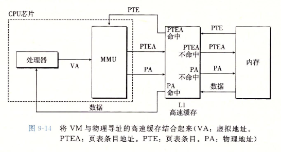
未完待续。。。